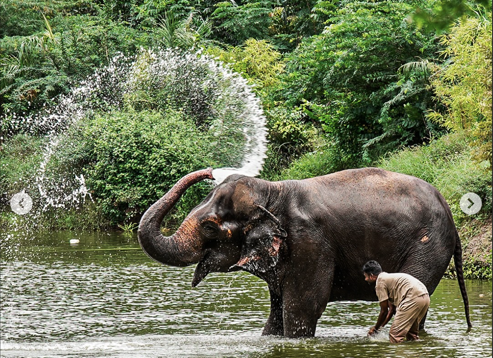

Welcome to Bring Back Madhuri
Madhuri, the beloved elephant of Kolhapur, was recently relocated to Gujarat. We believe she belongs with her community in Nandani. Join us in our fight to bring her back home.
About Madhuri
Madhuri, also known as Mahadevi, is a 36-year-old female elephant who has been a part of the Nandani village in Kolhapur for over 30 years. She was brought to the Jain math at the age of 3 and has since been a cherished member of the community.
However, due to health concerns raised by PETA India, the Bombay High Court ordered her relocation to Vantara's facility in Jamnagar, Gujarat, for better care. Despite this, the people of Kolhapur want her back, citing her deep emotional and cultural significance.
The Campaign
The #bringbackmadhuri campaign has gained massive support, with over 100,000 signatures collected in just 24 hours. Protests have been held, and even mobile network boycotts have been called in response to her relocation.
Political leaders, including Maharashtra minister Prakash Abitkar and MPs Dhananjay Mahadik and Dhairyasheel Mane, are actively working to bring Madhuri back to Kolhapur.
Vantara's Side
Vantara's Radhe Krishna Temple Elephant Welfare Trust in Jamnagar, Gujarat, is a state-of-the-art facility offering advanced care for elephants. They have assured that Madhuri is being well taken care of, with hydrotherapy and expert veterinary care.
However, the people of Kolhapur argue that Madhuri's home is in Nandani, and she should be allowed to return.
How You Can Help
- Sign the Petition: Add your name to the growing list of supporters demanding Madhuri's return.
- Join Protests: Participate in or organize events to raise awareness.
- Spread the Word: Share the campaign on social media using #bringbackmadhuri.
- Donate: Support the campaign financially to cover legal and organizational costs.